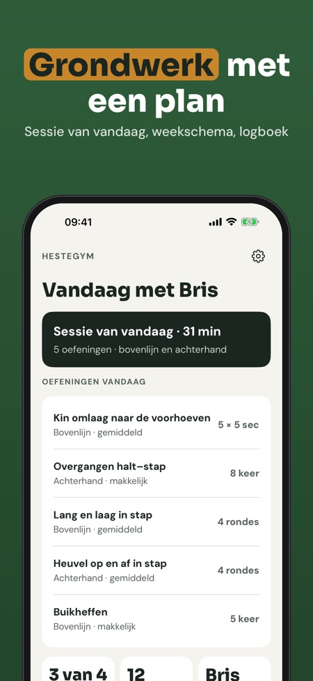
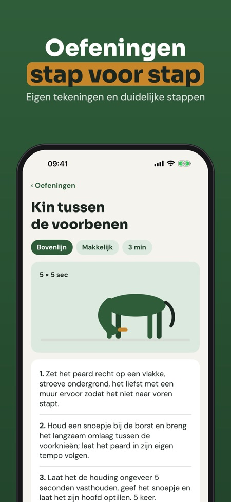
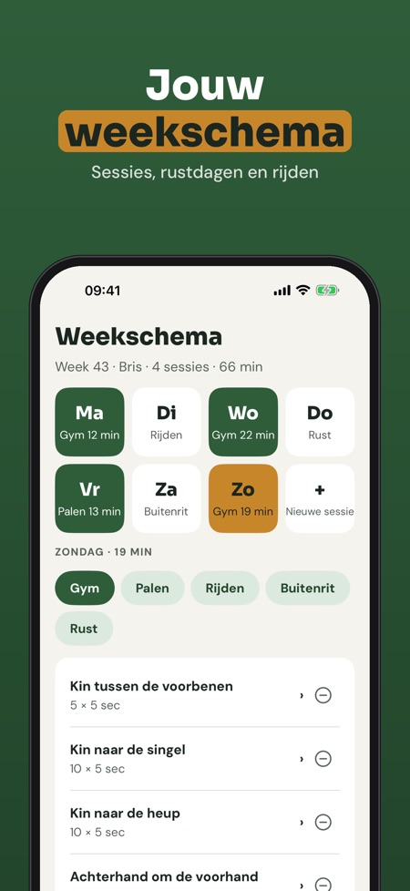

Rekken, kracht en weekschema. Oefeningen vanaf de grond voor je paard: rekken, kracht en balans in korte sessies met timer, weekschema en logboek – ook zonder internet in de stal.



Hestegym is het trainingsprogramma voor iedereen die vanaf de grond met zijn paard werkt: oefeningen, weekschema, timer en logboek op één plek.
De sessie van vandaag met timer, 12 oefeningen en het logboek kun je zonder aankoop gebruiken. De volledige versie is een eenmalige aankoop voor de hele bibliotheek, weekschema’s, herinneringen, voortgang en meer paarden. Geen abonnement.
Hestegym geeft geen veterinair advies en vervangt geen dierenarts of fysiotherapeut. Is je paard geblesseerd, kreupel of onder behandeling: vraag eerst je dierenarts.